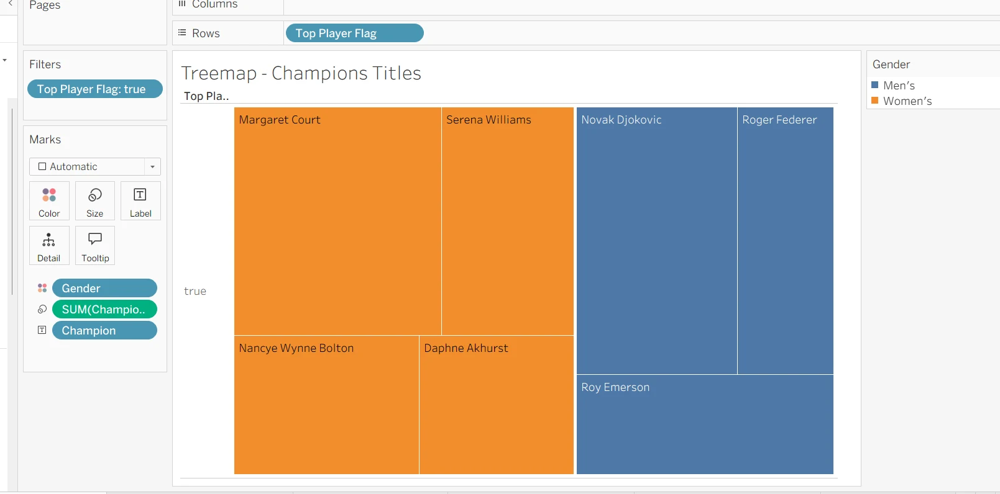

03 / Data Analysis · Visual Storytelling
一场决赛，
多个观察角度。
Australian Open Visual Analytics：从冠军分布、国籍变化到比赛时长，用可视化组织澳网历史决赛数据。
TableauExcel数据清洗指标设计
215决赛记录 · 报告样本数
1905–2026报告数据覆盖区间
7 个视角分布、趋势与多指标比较
个人项目 · 数据整理、计算字段设计、Tableau 可视化与分析报告。每一行代表一场决赛。
探索原始图表
点击切换 · 点击图片查看大图冠军分布 / 树状图

矩形面积表示冠军次数，颜色区分男女组。筛选五次及以上夺冠者，用于比较样本内的冠军集中程度。
从数据到可解释的图表
字段整理缺失值处理计算指标筛选与图表
数据包含年份、性别、冠军与亚军、国籍、种子、时长和逐盘局数。根据分析问题选择图形编码，而不是把所有信息堆在一张图中。
三个计算口径
Champion Titles
按选手统计样本中的夺冠次数。
Top Player Flag
筛选五次及以上夺冠选手。
Games Won / Games Played
赢局占总局数的比例，不是赢得比赛的概率。
分析可信度，也是一部分成果
缺失值有来源
原报告包含 AI 辅助时长估计。复盘中需要保留填补标记，比较包含与排除估计值时的结论。
比较有边界
男女赛制、历史时期和退赛情况影响比赛时长。图表相关性不能直接解释竞技实力或耐力。
样本有范围
这里观察的是决赛与冠军表现。不能把决赛数据外推为全部赛事或球员职业生涯。
展示版本依据提供的 A2 报告制作。原始 Excel / Tableau 工作簿未随材料提供，因此公开页面展示真实报告图表，不伪造交互式 Tableau 工作簿或底层数据。